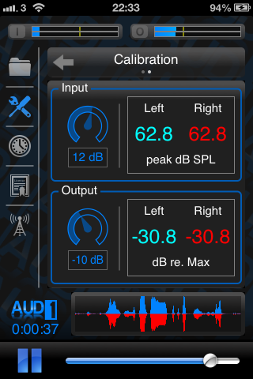
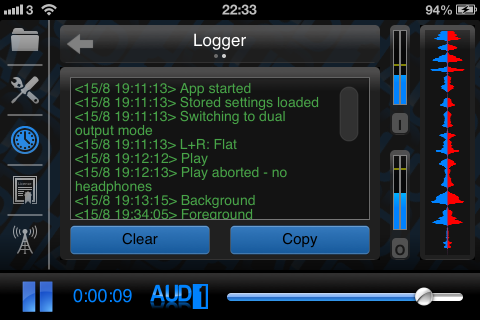

Basic Navigation
AUD-1 is comprised of various pages of user adjustable settings that can be navigated by tapping one of the 5 icons visible in the navigation bar on the left-side of the screen.
 |
Tapping the folder icon will reveal controls allowing the user to shape the sound processing to their needs. |
 |
Tapping the tools icon will reveal controls allowing the user to adjust the global function of the sound processing in the app. |
 |
Tapping the clock icon will reveal information screens showing usage statistics and logs. |
 |
Tapping the certificate icon will reveal a screen showing information about the app, including current CPU usage. |
 |
Tapping the radio-tower icon will open this website in the default browser. |
Tapping the main navigation icons reveals sub-pages which each have a descriptive header like that shown below. The header shown has a title, and dots to indicate the position of the visible page within the group. Tappable arrows appear allowing the user to navigate between various pages within the group. Pages can also be navigated using horizontal swipe gestures within the main page area.
AUD-1 supports use in both horizontal and vertical device orientations, allowing the user to choose whichever is more comfortable.
|  |  |